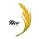

back to bottom

ABOUT US
Welcome to Masvee, where tradition meets innovation in the art of rice milling. Established 2021, we have been proudly serving our customers with premium quality rice products for 3
years. Our journey began with a vision to redefine excellence in the rice industry, and today, we stand as a trusted
name synonymous with quality, sustainability, and customer satisfaction.
Our Story
Founded by Nduba Chidimma Vanessa, Masvee has humble beginnings rooted in a deep-seated passion for rice cultivation
and milling. What started as a small-scale operation has evolved into a leading rice milling company, thanks to our
unwavering commitment to excellence and continuous improvement. Over the years, we have invested in cutting-edge
technology and sustainable practices to deliver superior rice products that meet the highest standards of quality and
taste.
Our Mission
At Masvee, our mission is simple: to provide our customers with the finest rice products while upholding the
values of integrity, transparency, and social responsibility. We strive to foster strong relationships with our
customers, suppliers, and communities, guided by principles of fairness, honesty, and respect. By staying true to our
mission, we aim to be a driving force for positive change in the rice industry and beyond.
Our Values
- Quality: We are committed to producing rice of exceptional quality, meeting and exceeding the expectations of our
customers.
- Sustainability: We recognize the importance of sustainable practices in preserving our environment and natural resources
for future generations.
- Innovation: We embrace innovation and technology to enhance efficiency, productivity, and the overall customer
experience.
- Integrity: We conduct our business with the utmost integrity, honesty, and ethical standards, earning the trust and
loyalty of our stakeholders.
- Community: We are dedicated to supporting the communities in which we operate, contributing to their growth and
prosperity through meaningful partnerships and initiatives.
Our Team
Behind every grain of rice is a team of dedicated professionals who are passionate about what they do. Our team brings
together expertise from various fields, including agriculture, engineering, quality control, and customer service, to
ensure that every aspect of our operation runs seamlessly. Together, we work tirelessly to uphold our reputation for
excellence and deliver value to our customers every step of the way.

Contact Us
Thank you for taking the time to learn more about Masvee. If you have any questions, feedback, or inquiries,
please don't hesitate to reach out to us. We look forward to serving you and being your trusted partner in quality rice
products.
copyright©2024
back to the top